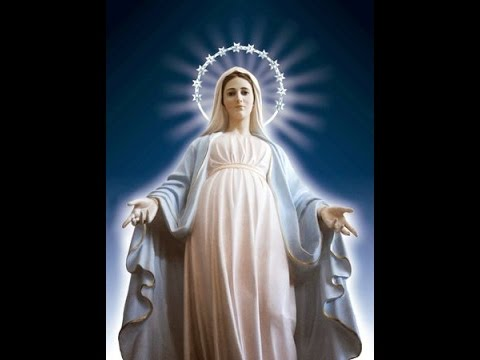
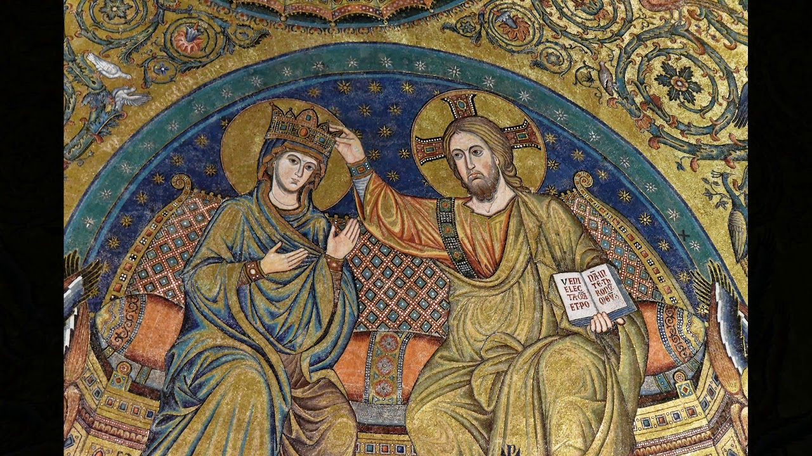

Tout à Jésus par Marie ! |
|
Quelques lieux d'apparition de Marie
Les apparitions de la Vierge sont à l'origine de nombreux sanctuaires et pèlerinages. Voici quelques-uns de ces lieux. Les apparitions y sont officiellement reconnues par l'Église. Publié le 15 avril 2015. La grotte de Lourdes © DR
Sainte-Marie-Majeure, la neige d'été à Rome
 La basilique Sainte-Marie-Majeure, à Rome, date du Ve siècle. Le Pape Libère aurait eu une apparition de Marie demandant qu'un sanctuaire lui soit construit. Un 5 août, sous un plein soleil, le mont Esquilin fut couvert de neige, et un cerf aurait alors tracé de ses bois le plan du futur édifice... Il s'agit de la plus grande église élevée en l'honneur de la Vierge Marie. Voir aussi sur croire.com "Marie m'aide à comprendre le Christ" Prière à sainte Marie Mère de Dieu Prière : Nous te saluons Marie Marie, la Sainte unique Textes de l'Eglise sur Marie L'Eglise paraît, Marie s'efface Pourquoi Marie apparaît-elle ?Czestochowa, sur la "Colline Claire"
Des moines paulins venus de Hongrie fondèrent un monastère à Jasna Gora, la "Colline Claire", en 1382. Deux ans plus tard, le prince d'Opole, lui aussi hongrois, leur offrit une icône mariale, peinte par saint Luc selon la légende. L'icône devint progressivement symbole de la résistance du peuple polonais à toutes les oppressions. Cher à Jean-Paul II, ce sanctuaire, proche de Cracovie, fêtait son sixième centenaire en 1982. Il a accueilli les JMJ en 1991. Guadalupe, la Vierge métisse À la périphérie de Mexico, en 1531, dix années à peine après la conquête espagnole, une dame métisse apparaît à un Indien catéchumène. La "Morenita" laisse l'empreinte de ses traits sur sa tunique. Ce linge, icône mystérieuse, est l'objet d'un culte depuis près de cinq siècles. Patronne de l'Amérique tout entière, Notre-Dame de Guadalupe est fêtée le 12 décembre. Cinq millions de pèlerins par an se rendent à Guadalupe, venant à pied de tout le Mexique. Jean-Paul II réserva son premier pèlerinage de Pape à ce sanctuaire, en 1979, quelques mois après son élection.La Vang, la Vierge des persécutés
La Vang était, à la fin du XVIIe siècle, un hameau perdu dans la forêt tropicale, à 60 km environ au nord de Hué, au Vietnam. Des catholiques cherchèrent refuge dans cette forêt à la suite de terribles persécutions, en 1773. Un soir, après la prière, une dame vêtue de blanc apparut et dit : "Mes enfants, ce que vous avez demandé, je vous l'accorde". La paix revenue, une chapelle fut construite en 1800, à laquelle succéderont des sanctuaires plus vastes. Le pèlerinage a lieu tous les trois ans, le 8 août. Mariapocs, au jardin de Pannonie Au nord-est de la Hongrie, la basilique de Mariapocs abrite une "icône miraculeuse". En 1696, un fils de paysans, Ladislas Csigri, 8 ans, avait été enlevé par les Turcs. Il retrouva sa liberté et ses parents firent peindre, en remerciement, une représentation de la Vierge dans l'église du village. Le 4 novembre 1696, la Vierge pleura des larmes de sang, manifestant sa sollicitude envers un pays encore occupé par les Turcs. Aujourd'hui, le sanctuaire est animé par les catholiques de rite byzantin. En 1991, le Pape Jean-Paul II a célébré la messe à Mariapocs en présence de 200 000 personnes.
Tel : 79614036
designed by IGIRANEZA Nina
Tel : 79614036